☰
Home
Recipes
Contact
Simple Recipes
Here are some simple recipes to try out:
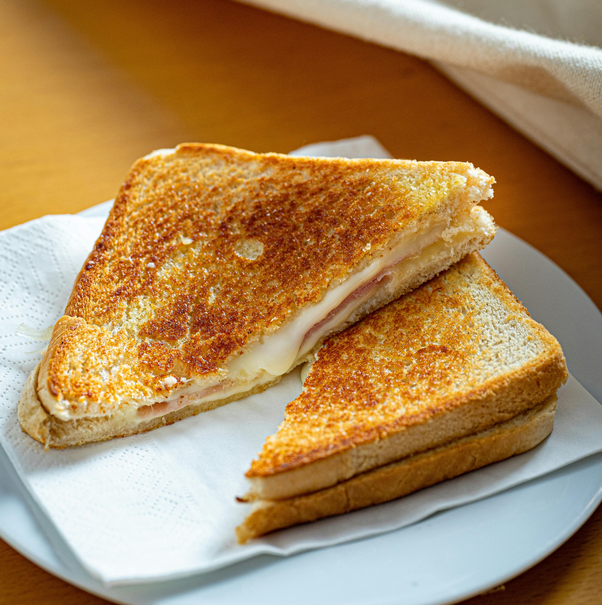
Grilled Cheese
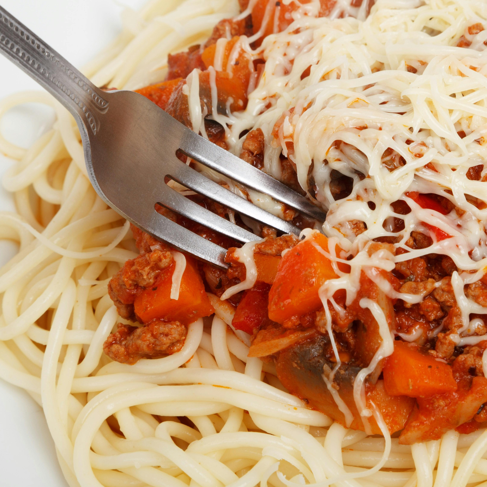
Spaghetti
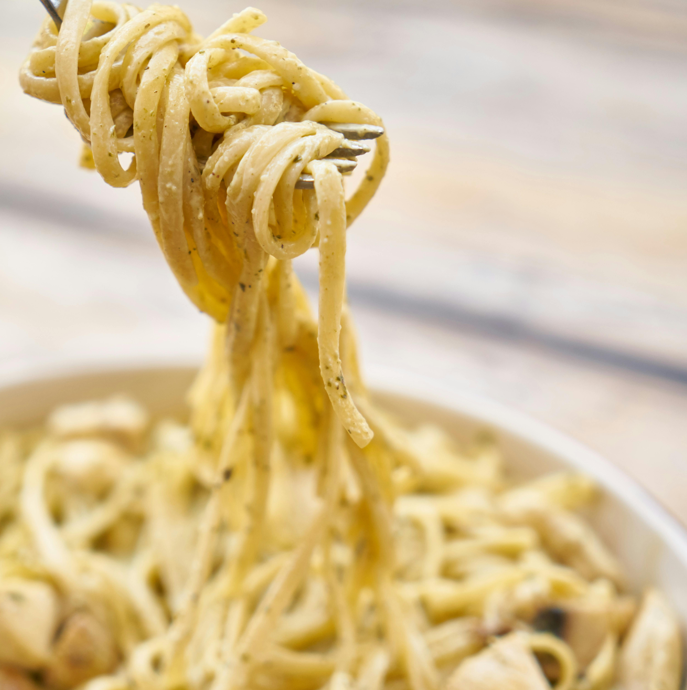
Chicken Alfredo
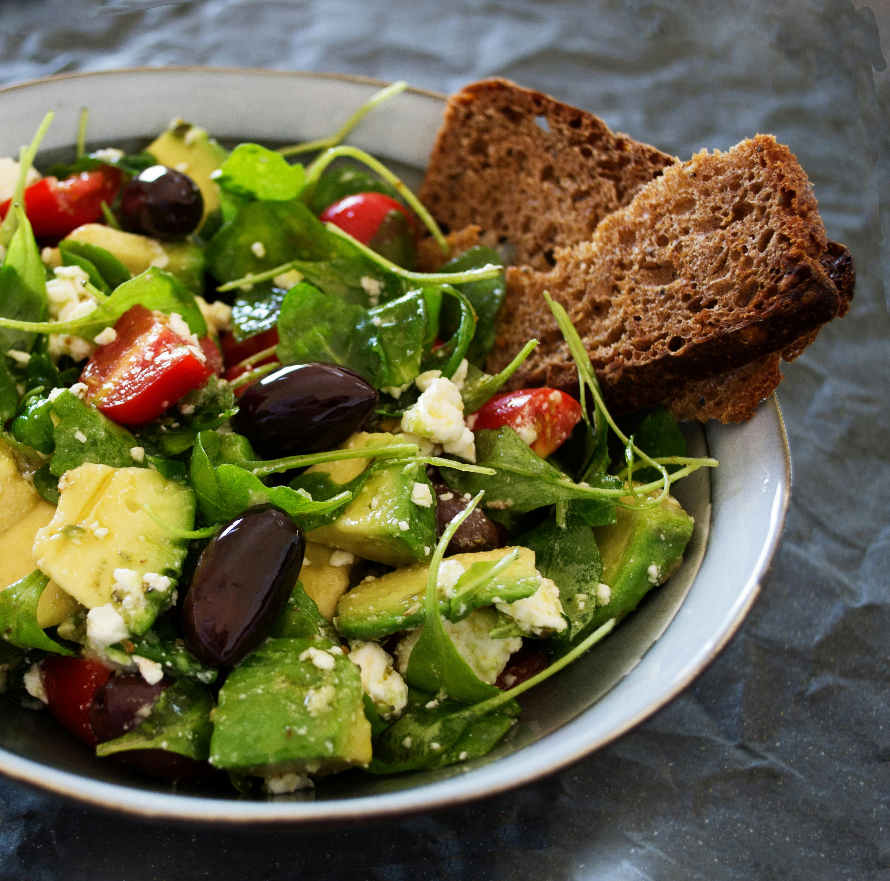
Fresh Salad
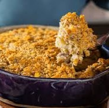
Ritz Cracker Chicken Casserole
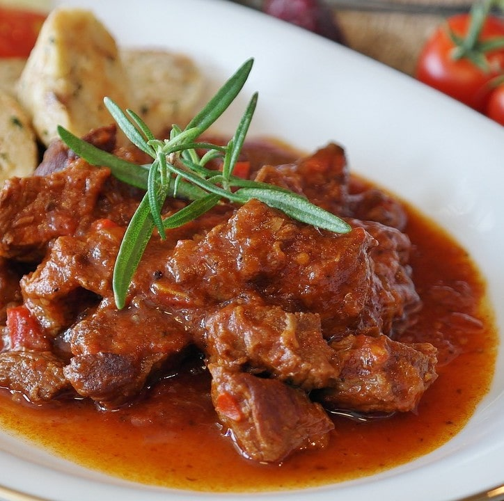
Goulash
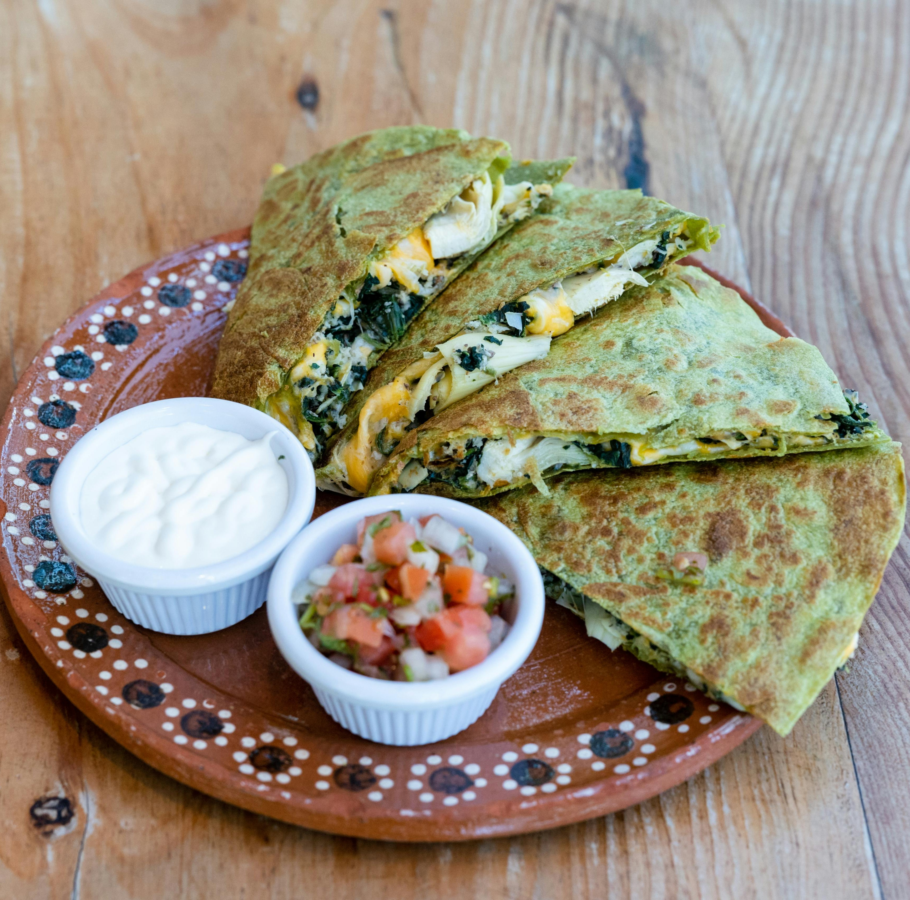
Chicken Quesadilla
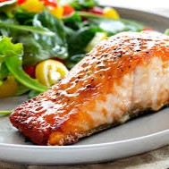
Brown Sugar Salmon
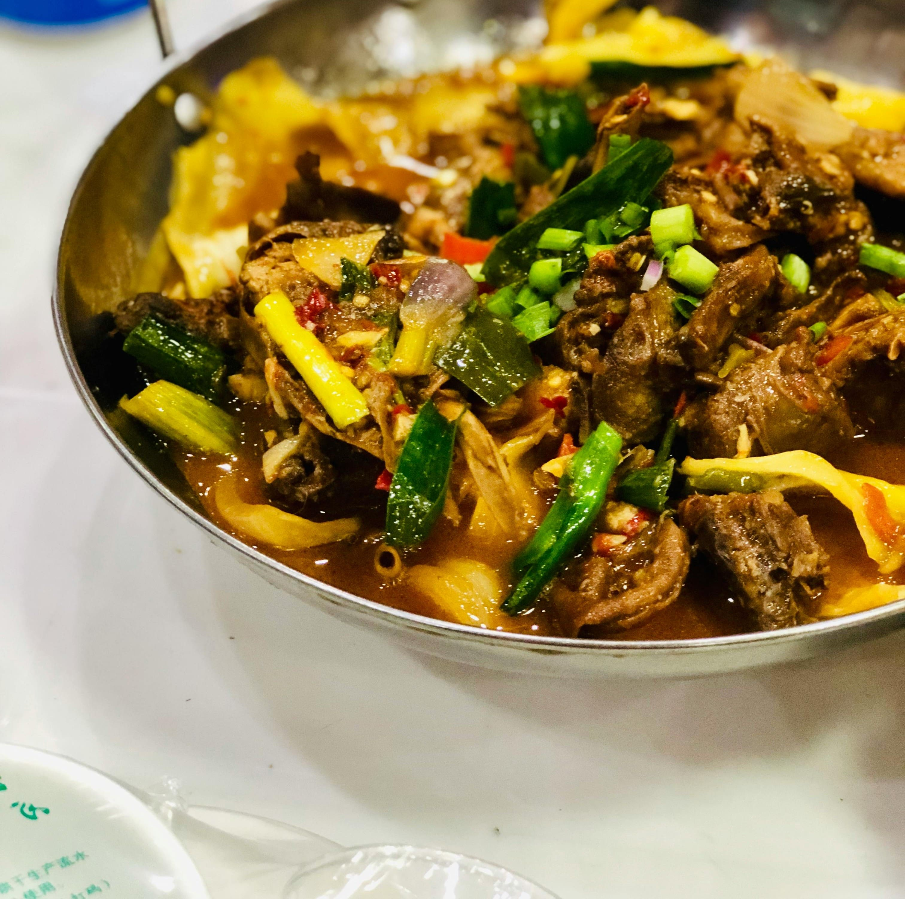
Chicken Stir-Fry
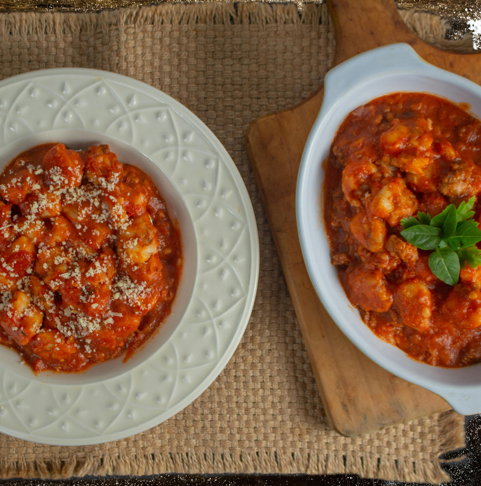
Taco Gnocchi Bake
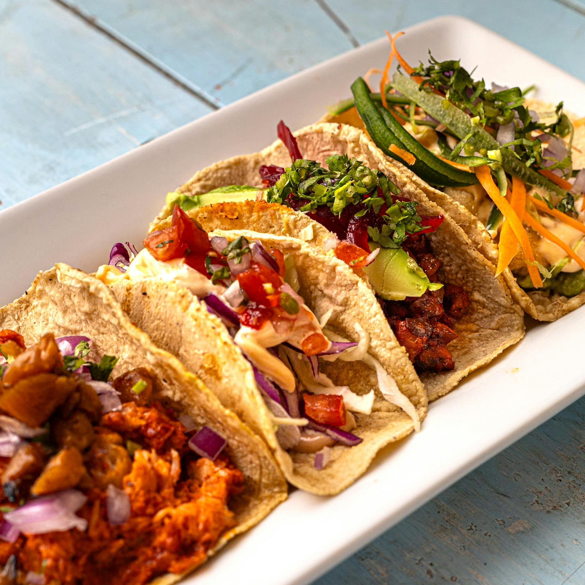
Chicken Tacos
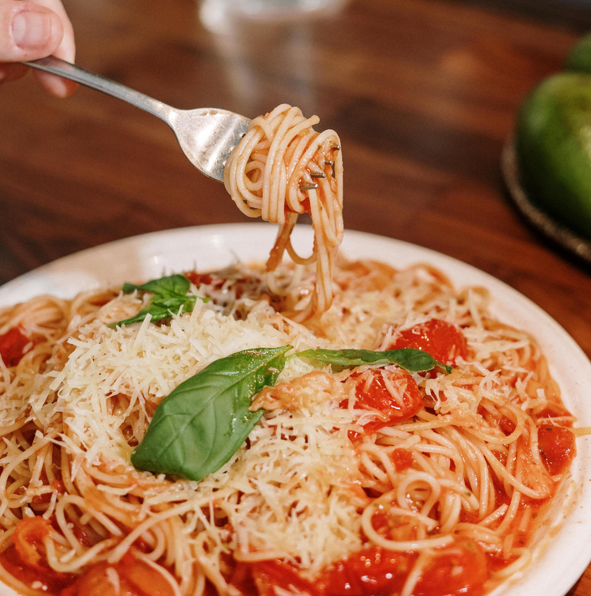
Taco Spaghetti
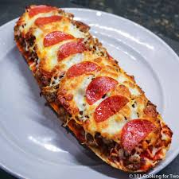
French Bread Pizza
Recommended Recipe
Here are the most recommended recipes:
Chicken Alfredo
Chicken Tacos
Ritz Cracker Chicken Casserole